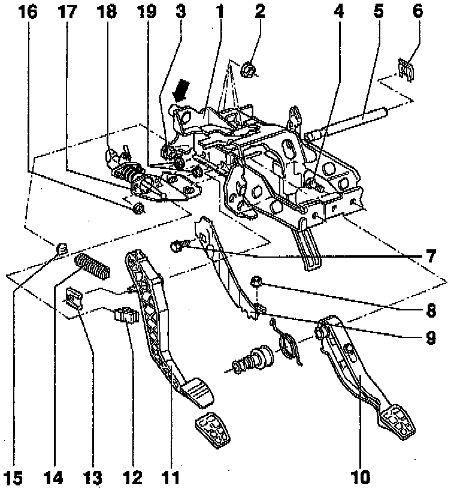
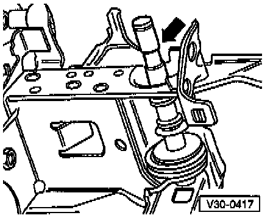

Replacement
WARNING:Always replace circlips and self-locking nuts and bolts.
CAUTION: On vehicles equipped with an anti-theft radio, make sure you know the correct radio activation code before disconnecting the battery.
NOTE:
^ Disconnect the battery Ground (GND) strap.
^ Lubricate all bearing and contact surfaces with MoS2 lubricant
^ Follow General repair instructions.

COMPONENT NOTES AND INFORMATION
1 Pedal cluster mounting bracket
- Removing: first remove steering column with column tube, refer to Steering and Suspension
- Disconnect brake pedal from push rod of brake master cylinder, refer to Replacement. Service and Repair
NOTE:
^ Only the new pedal cluster mounting bracket with a clutch cable guide tube -arrow- is available as a replacement part.
^ Before installing the new pedal cluster bracket on a vehicle with hydraulic clutch control, the guide tube must be removed.
Saw it off flush with bracket.
2 Self-locking nut
- Always replace
- Tightening torque: 25 Nm (18 ft lb)
- For attaching bracket to threaded stud on installation plate
3 Self-locking nut
- Always replace
- Tightening torque: 25 Nm (18 ft lb)
- For attaching bracket to threaded studs on vacuum brake booster
4 Self-locking bolt
- Quantity: 2
- Always replace
- Tightening torque: 25 Nm (18 ft lb)
- For attaching bracket to assembly support
5 Pivot pin
- For clutch and brake pedals
- Installation position, refer to Fig. 1, below.
6 Securing clip
- Removing/Installing, refer to Replacement. Service and Repair
7 Bolt
- Tightening torque: 25 Nm (18 ft lb)
- For attaching additional brace (item -9-) to pedal bracket
8 Self-locking nut
- Always replace
- Tightening torque: 25 Nm (18 ft lb)
- For attaching additional support -9- to floor panel
9 Support
- Removing and installing, refer to Replacement.
10 Brake pedal
11 Clutch pedal
- Removing and installing, refer to Replacement. Service and Repair
12 Retainer
- Removing and installing, refer to Replacement.
13 Securing clip
- Secures pivot pin -5-
- Removing, refer to Replacement. Service and Repair
14 Over-center spring
- Removing and installing, refer to procedure below.
15 Over-center spring mount
- Install in mounting bracket
16 Self-locking nut
- Always replace
- Tightening torque: 25 Nm (18 ft lb)
- For attaching master cylinder to mounting bracket
17 Mounting bracket
- Removing: first remove clutch pedal and master cylinder
18 Master cylinder
- Removing and installing, refer to Replacement.
19 Self-locking nut
- Always replace
- Tightening torque: 25 Nm (18 ft lb)

Fig. 1 Installation position of clutch and brake pedal pivot pin
- Recess -arrow- on clutch pedal side.
REMOVAL
- Open clutch slave cylinder bleeder valve and connect VAG 1238B brake filling and bleeding unit, refer to Bleed Clutch Hydraulic System. Service and Repair
- Remove over-center spring, refer to Replacement. Service and Repair
- Disconnect clutch pedal from master cylinder, refer to Replacement.
- Press operating rod toward engine compartment until reaching stop.

- Remove clutch pedal securing clip from pivot pin- by prying tab in direction of arrow -1- with screwdriver, then pushing clip off in direction indicated by arrow -2-.

- Remove securing clip -A- for pivot pin (brake pedal side) by inserting screwdriver below tab and pressing in direction of instrument panel -arrow-.
- Pull pivot pin out toward right side until clutch pedal can be removed.
INSTALLATION
- Install in reverse order of removal. While doing so, note the following:
- Before installing securing clip on brake pedal side, position pivot pin so that flats -B- are vertical, refer to the illustration above.
- Connecting clutch pedal to master cylinder operating rod.
- Refill brake fluid reservoir to "max" marking with brake fluid.
NOTE: The clutch hydraulic system must be bled if the brake fluid level has dropped below the "min" marking.